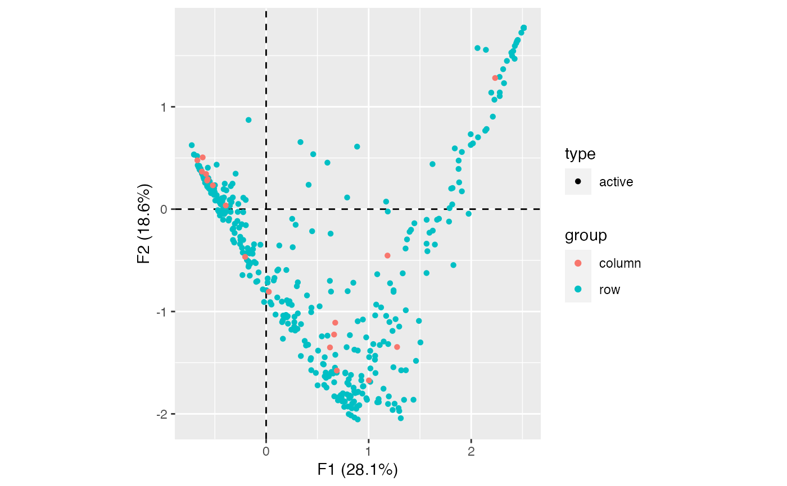
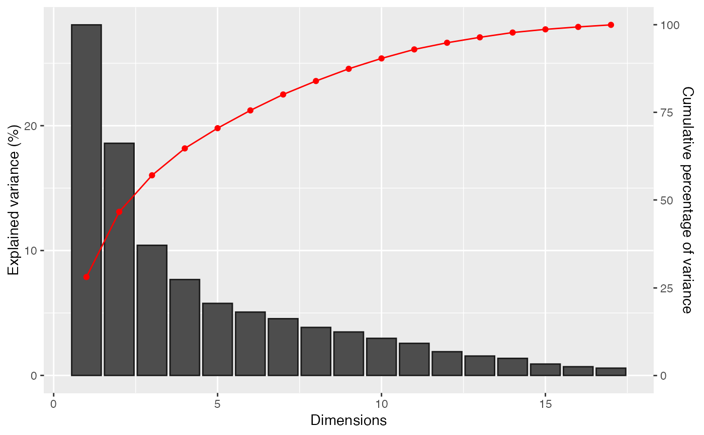

Plots factor map.
plot_rows(object, ...) plot_columns(object, ...) # S4 method for MultivariateAnalysis plot_rows( object, axes = c(1, 2), active = TRUE, sup = TRUE, highlight = NULL, group = NULL ) # S4 method for CA,missing plot( x, margin = c(1, 2), axes = c(1, 2), active = TRUE, sup = TRUE, highlight = NULL, group = NULL ) # S4 method for CA plot_columns( object, axes = c(1, 2), active = TRUE, sup = TRUE, highlight = NULL, group = NULL ) # S4 method for PCA,missing plot( x, margin = 1, axes = c(1, 2), active = TRUE, sup = TRUE, highlight = NULL, group = NULL ) # S4 method for PCA plot_columns( object, axes = c(1, 2), active = TRUE, sup = TRUE, highlight = NULL, group = NULL ) # S4 method for BootstrapPCA plot_columns( object, axes = c(1, 2), active = TRUE, sup = TRUE, highlight = NULL, group = NULL )
| object, x | |
|---|---|
| ... | Currently not used. |
| axes | A length-two |
| active | A |
| sup | A |
| highlight | A |
| group | A vector of categories specifying the categorical variable from
which to color the individuals (only used if |
| margin | A length-one |
Point shapes and line types are set whether an observation is a row/individual or a column/variable and is active or supplementary.
Colors are set according to highlight and group:
If highlight is not NULL, the color gradient will vary according
to the value of the selected parameter.
If group is a numeric vector, the color gradient and size will
vary by the value of group.
If group is not a numeric vector, the colors will be mapped to
the levels of group.
If both are NULL (the default), then the same rule as for shapes is
used.
Other plot:
plot_contributions(),
plot_eigenvalues
N. Frerebeau
## Load data data("zuni", package = "folio") ## Compute correspondence analysis X <- ca(zuni) ## Plot observations plot(X)
